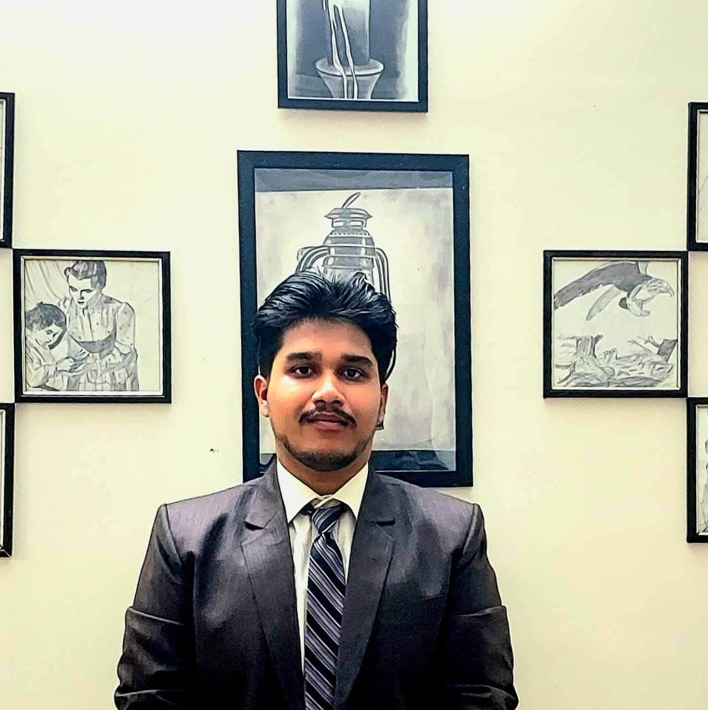
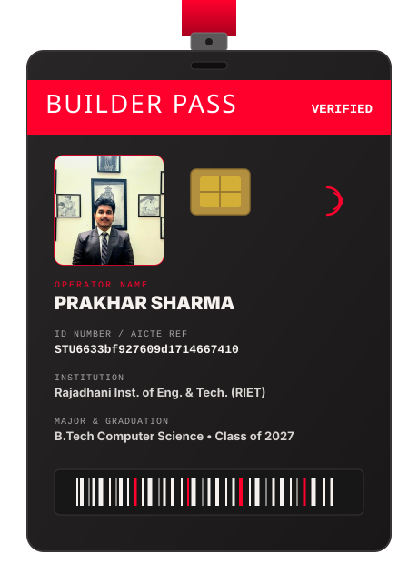

PRAKHAR
SHARMA
Cloud-Native Systems Engineer • AI Systems Architect • Leadership Operator
Undergraduate in Computer Science & Engineering at Rajadhani Institute of Engineering & Technology (RIET) (Class of 2027). Guided by duty-driven action from the Bhagavad Gita and instilled with defense discipline, I engineer resilient distributed cloud meshes, clinical RAG architectures, and cultivate high-velocity student developer ecosystems.

Prakhar Sharma
AICTE ID: STU6633bf927609d1714667410
45+
GitHub Repositories
Dual-branch safety (Ex / main)
TOP 1.1%
Shell / AICTE Finalist
Top 40 out of 3,668 nationwide
600+
Engineers Mentored
MuLearn Alumni Cell & Vidya Sadhnam
150+
AWS CloudCraft Sprints
GenAI Bootcamp Director (SBGL)
MISSION-CRITICAL SYSTEMS
Decoupled Architectures • Clinician-First RAG • Predictive ML
OmniPrice ML Engine
Autonomous pricing elasticity and revenue forecasting engine trained on high-dimensional multi-modal catalog data.
AWS: SageMaker Serverless, S3 Lake, Lambda
Core: LightGBM, XGBoost, PySpark, FastAPI
MediScribe AI Platform
Ambient clinical speech-to-EHR transcription pipeline generating structured SOAP notes with zero hallucination.
AWS: Transcribe Medical, Bedrock Claude 3.5, DynamoDB
Core: FastMCP 2.0, Python, WeasyPrint, Next.js
MedBuddy Clinical RAG
Grounded medical decision support leveraging hybrid dense + BM25 retrieval over clinical documentation. Winner at Gravity | IEDC-MCET.
AWS: Bedrock Mantle, OpenSearch Serverless, ECS Fargate
Core: LangChain, Titan Embeddings V2, FastAPI
Agri-Smart Pro Dashboard
Smart irrigation prediction engine for 3 farm parcels. Finalist in AICTE & Shell India Skills4Future (Top 40 out of 3,668 developers).
Stack: MultiOutputClassifier, RandomForest, Streamlit
Integration: OpenWeatherMap Live API, Diagnostics Engine
Fasal Saarthi: Kushal Kisan
7-parameter crop recommendation pipeline (N, P, K, pH, temp, humidity, rainfall) delivering 95%+ confidence crop yield recommendations.
Platform: IBM watsonx.ai Studio, AutoAI Pipeline
APIs: Multi-language endpoints (Python, Java, JS, Scala)
KSERC Regulatory Audit Engine
Statutory tariff petition financial audit tool developed for the Kerala State Electricity Regulatory Commission to verify utility truing-up.
AWS: Amazon Textract, Bedrock Mantle, S3 Lake
Validation: Shri Jose T K IAS (Rtd.) & Shri B. Pradeep
FIELD EXPERIENCE & APPOINTMENTS
Intern // Kerala State Electricity Regulatory Commission (KSERC)
2026 // Statutory MoUFormal work order executed between KSERC Board and Rajadhani Institute of Engineering & Technology
Presented to Chairman Shri Jose T K IAS (Rtd.), Commission Member Shri B. Pradeep, and the Board of KSERC. Engineered an automated truing-up tool auditing multi-crore utility financial petitions under mentor Asst. Prof. Akshayraj M.R.
Partner Engagement Intern // MuLearn Foundation
6 Months DurationUnder leadership of Deepu S Nath & Sachin Raj M
Architected statewide engagement frameworks, onboarded institutional chapters, and bridged engineering cohorts with industry leaders at events like Olympus: The HR Icon (CareStack Technopark) and MUTATE '26.
Alumni Cell Lead // µLearn RIET
Appointed LeadershipManaging 600+ engineers across Kerala alongside Doel Jose & Soumya Sara John
Spearheading mentorship pipelines, structured knowledge exchanges, and industry-readiness bootcamps connecting accomplished RIET alumni with current engineering batches under Principal Dr. Madhukumar S.
AWS Student Builder Group Leader (SBGL) // RIET
CloudCraft Bootcamp DirectorAWS Certified Cloud Architecture & Community Building
Directed the 4-day CloudCraft GenAI Bootcamp, successfully onboarding 150+ student engineers to AWS cloud infrastructure, serverless architectures, and Bedrock foundation models.
AI Cloud Developer Intern // Edunet Foundation & IBM SkillsBuild
AICTE CollaborationBuilt Fasal Saarthi & Agri-Smart Pro
End-to-end ML pipeline engineering on IBM watsonx.ai Studio, AutoAI, and Cloud REST clients. Recognized as finalist in Shell India Skills4Future Green Skills AI initiative.
CAMPUS MOVEMENTS & SPRINTS
Vidya Sadhnam // Execution Culture
Founded to bridge classroom theory to industry-grade software deployment at RIET. Officially commended with Letter of Recommendation by Dr. Sangeetha Shibu (HoD, CSE) and Asst. Prof. Amrutha S Aravind.
Deconstructed Git, Google Antigravity, Web Architecture & deployed real-time software on Vercel within 30 minutes for S2 CSE peers.
Hands-on ML & Full Stack deep dive: Google Colab, Kaggle, IndiaAI AI Kosh, Supabase, and National Internship Program (NIP) onboarding.
Ecosystem Summits & Technopark Meets
Engaging with industry leaders and scaling enterprise healthcare & HR technology networks across Kerala's top technical hubs.
Ospyn Technologies Technopark meet. Strategized with Claire C John, Edwin Arun (UST HealthProof), and Deepu S Nath on scaling clinical RAG.
Volunteered & collaborated with MuLearn Foundation, Life at CareStack, and 50,000+ learner network with Sachin Raj M and Vishnu Prasad M V.
COMPETITIVE RECORD
IEEE Techventure 2.0 Debate
Cluster Debate Competition Winner at IEEE SB LBSITW alongside Akhil Kv & Adithya Baiju; facilitated by Pavithra Kishore & Mehreen Fathima.
Gravity | IEDC-MCET Ideathon
Awarded 1st Place for MedBuddy Healthcare AI assistant; selected by IEDC RIET under mentorship of Asst. Prof. Akshayraj M.R.
UST SIGHT 3.0 National Expo
National platform selection for MediScribe AI, presenting clinician-first speech-to-EHR transcription to healthtech executives.
Your Big Year® Global Citizens
Selected for the international Global Citizens Challenge (Feb 2026), connecting innovators across worldwide technical networks.
Google Solution Challenge 2026
Actively competing on ground zero, engineering scalable cloud solutions tackling United Nations Sustainable Development Goals.
Classical Indian Veena
Seasoned classical musician with distinguished performances including for the Chief of Western Air Command.
HONORING COLLABORATORS & MENTORS
Behind every resilient system is an ecosystem of uncompromising builders and guiding mentors.
The Mandanmaars Crew
Adithya Baiju & Akhil Kv & Adarsh Biju
"Team that keeps it real, always. The kind of people you want in the room when things get serious." Co-builders on MediScribe, MedBuddy, and Vidya Sadhnam.
Faculty & Department Mentors
Dr. Sangeetha Shibu, Asst. Prof. Amrutha, Asst. Prof. Akshayraj
CSE Department leadership at RIET, supporting KSERC government initiatives, Vidya Sadhnam sessions, and academic recommendations.
Ecosystem Leaders
Deepu S Nath, Sachin Raj M, Shri Jose T K IAS
The Purple Movement, MuLearn leadership, and KSERC commission mentorship facilitating real-world execution.
EVENT ARCHIVES & MEDIA VAULT
CloudCraft GenAI Bootcamp
150+ Engineers Onboarded to AWS
Hands-on architecture workshops on Bedrock, SageMaker & Serverless clouds.

Vidya Sadhnam: GitHub Geeks
Live Vercel Deployment Sprint
S2 CSE juniors deploying production web apps in 30 minutes.

KSERC Commission Board
Shri Jose T K IAS & Board Members
Truing-Up petition audit presentation at KSERC headquarters.
IEEE Techventure 2.0 Debate
Cluster Champions // LBSITW
Victorious alongside Akhil Kv & Adithya Baiju.
MUTATE '26 Campus Meet
Ospyn Technologies Technopark
Strategizing clinical RAG scaling with healthtech leaders.
Olympus: The HR Icon
CareStack Technopark
Collaborating with organizational and HR leaders across Kerala.
prak05@kernel:~$ welcome --verbose
PRAKHAR SHARMA // Cloud-Native Systems Engineer & AI Systems Architect.
Type 'help' to see available system commands.
BUILD SOMETHING GREAT.
Open for high-dimensional cloud architecture, enterprise Generative AI systems, and technical community scaling. Connect directly through verified institutional channels.